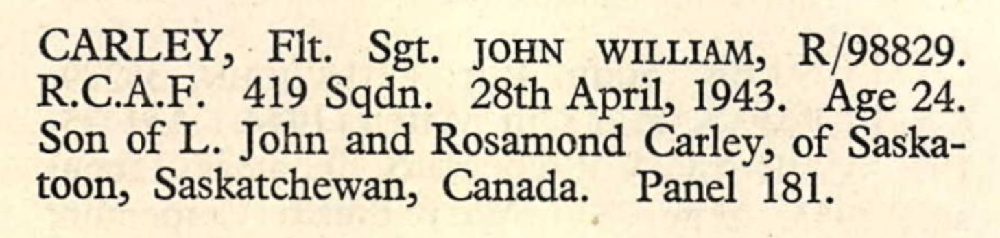
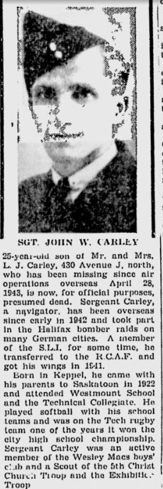
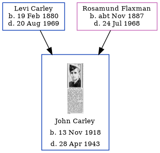

John William Carley 1918 - 1943
[ Home ] | [ Calendar ] | [ Surnames Index ] | [ Family History ]The son of Levi Carley and Rosamund FlaxmanJohn Carley, (also known as Jack Carley) the third cousin once-removed on the mother's side of Nigel Horne, was born in Keppel, Saskatchewan, Canada on Nov 13, 1918. He went to Westmount School, Saskatoon, Saskatchewan, Canada In 1943 he was serving in the military (regiment: Royal Canadian Air Force; Rank: Flight Sergeant; Service number: R/98829 419 Sqdn).
He died on Apr 28, 19431,2,3.
Parents
- Levi John was born on Feb 19, 1880
- Rosamund Ellen was born c. Nov 1887
Citations
- https://www.veterans.gc.ca/eng/remembrance/memorials/canadian-virtual-war-memorial/detail/1084009?John%20William%20Carley
- Commonwealth War Graves Commission Debt Of Honour - Findmypast
- World War 2 Allies Collection - Findmypast
Media
Runnymede Memorial Register

John Carley - Obituary

Commonwealth War Graves Commission Debt Of Honour - GBM/CWGC/ROLLOFHONOUR/001166872
World War 2 Allies Collection - WW2/06691915
Family Tree
Generated by ged2site. Last updated on Nov 13, 2024